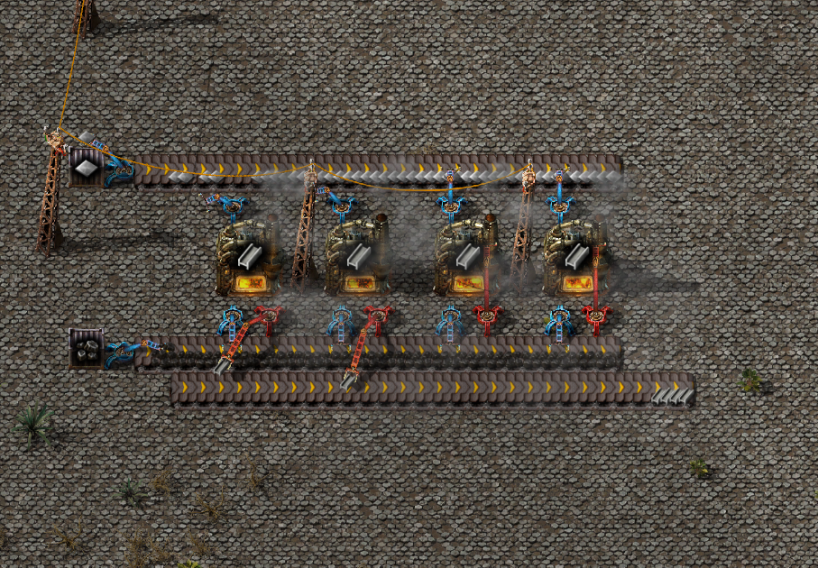
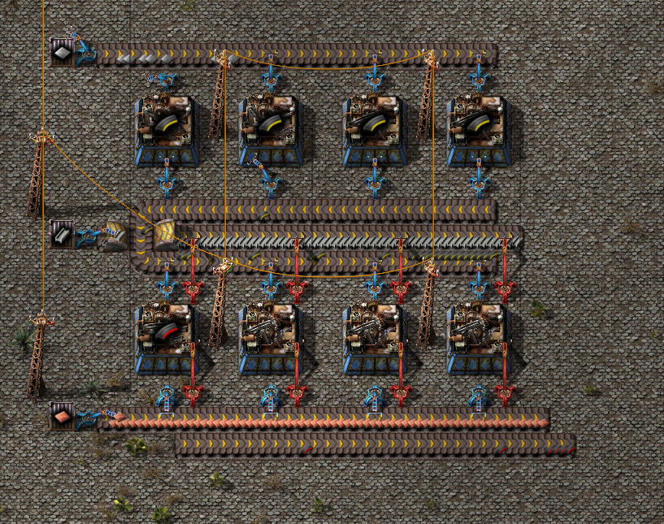
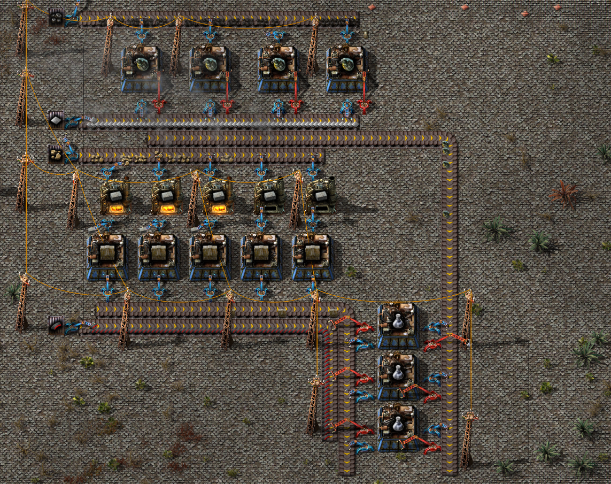

Чёрные пакеты исследований

Представлена примитивная схема производства стали синие манипуляторы созданы для подачи сырья в печь так же красные предназначены для выгрузки.

Здесь показан полный цикл создания бронебойных магазинов с боеприпасами, они пригодятся для создания черных исследовательских пакетов, обратите внимание, что красные манипуляторы уже используются не только для загрузки готовой продукции, а также и для выгрузки.

Создание черных исследовательских пакетов. Как можете заметить тут и используются красные магазины с боеприпасами из прошлого скриншота.